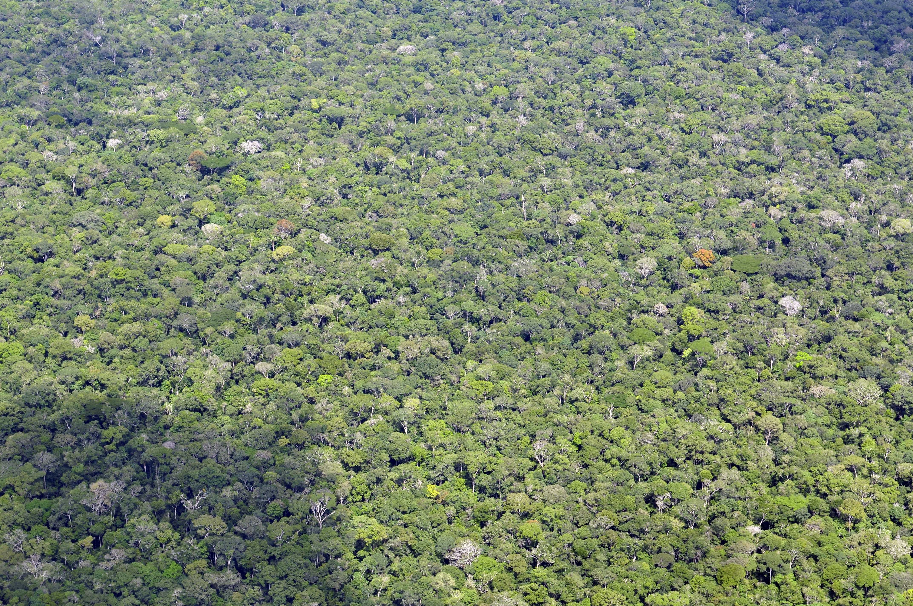

Noruega anuncia un nuevo aporte de R$ 350 millones al Fondo Amazonía
La contribución, anunciada durante la COP31, reconoce la reducción de la deforestación y está vinculada a resultados verificados.

Qué pasó
Noruega anunció este lunes 9 de noviembre de 2026 una nueva contribución de aproximadamente R$ 350 millones, equivalentes a 600 millones de coronas noruegas, al Fondo Amazonía de Brasil. La embajada noruega en Brasilia explicó que el compromiso reconoce los avances del país en la reducción de la deforestación. La ministra noruega de Clima y Medio Ambiente, Sigrun Aasland, destacó la importancia de la selva para el clima y la biodiversidad. Según los datos Prodes/INPE (programa brasileño de vigilancia satelital de la deforestación) citados por la embajada, la deforestación amazónica cayó un 41,8% durante el período 2024/2025, hasta 3.335 km², mientras que en el Cerrado disminuyó un 23,8%, hasta 5.516,7 km². Noruega afirmó haber aportado ya unos R$ 3.800 millones al fondo desde su creación. El anuncio coincide con la COP31, celebrada en Antalya, Turquía. El Fondo Amazonía está gestionado por el BNDES (Banco Nacional de Desarrollo Económico y Social de Brasil) y financia proyectos de conservación, vigilancia y actividades sostenibles.
Análisis del Cuervo
El anuncio refuerza la importancia de los mecanismos internacionales que recompensan resultados verificados de conservación forestal. El importe anunciado no equivale a una transferencia inmediata: la contribución está vinculada a la verificación final de los indicadores de deforestación, según UOL. La reducción de la superficie deforestada es relevante, pero los resultados duraderos también dependen de la fiscalización, la gobernanza territorial, la protección de las comunidades y la transparencia en el uso de los recursos. La gestión del BNDES y la evaluación de proyectos permiten seguir el destino de los fondos.
Contrapunto
Los indicadores positivos no significan que hayan desaparecido la deforestación, la minería ilegal ni los incendios forestales. La cifra anunciada es un compromiso de financiación, no la confirmación de un desembolso. El pago depende de la verificación y su impacto real requiere seguimiento. La fotografía de archivo es de abril de 2011 y no muestra el anuncio de noviembre de 2026.